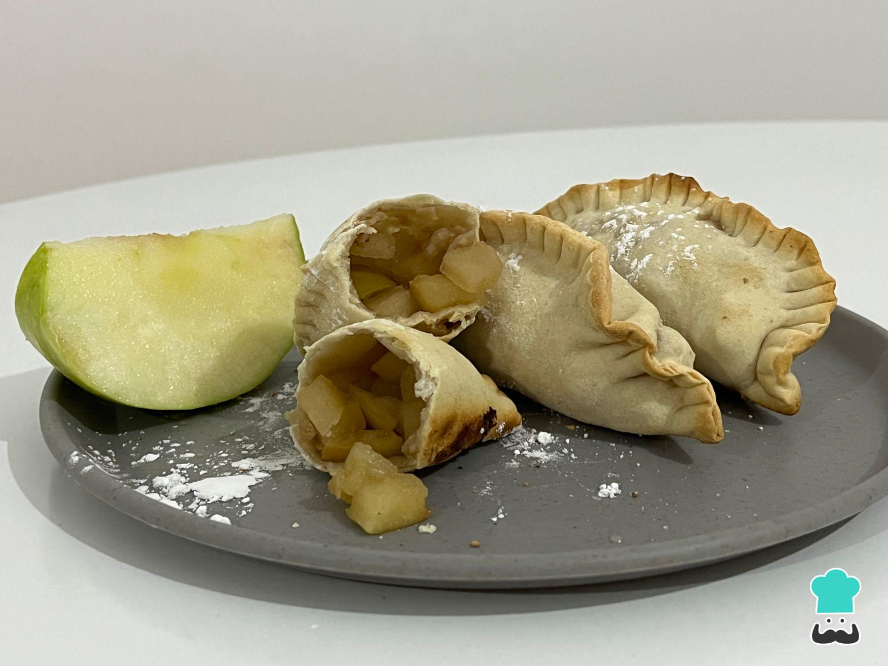

Empanadas de Manzana

Descripción
Generalmente, relacionamos las empanadas con preparaciones saladas. Sin embargo, tanto sea fritas o al horno, son un plato principal muy tradicional en Argentina, al igual que la pizza. Asimismo, en esta oportunidad, decidimos mostrarte cómo preparar empanadas para consumir de postre, su sabor es similar al clásico strudel o a la tarta de manzana. Se tratan de unas empandas de manzana, las cuales las combinaremos con azúcar, pasas, nueces y canela para exaltar su sabor. También verás cómo hacer la masa casera para que resulte una versión más saludable y económica. A partir de esta receta, podrás pensar otras versiones de empanadas dulces, te inspiraremos con más ejemplos al final de la receta, ¡no te lo pierdas!
Ingredientes
- 1/2 taza de harina
- 1 cucharada sopera de aceite
- 1/4 taza de agua
- 1 manzana verde
- 1 cucharada postre de azúcar
- 1 cucharada sopera de pasa de uva
- 5 medias nueces
- 1/2 cucharada postre de canela
Preparación
- Para empezar con la preparación de las empanadas de manzana y canela, primero lleva la harina a la mesada limpia. Abre el centro para hacer una corona y allí añade el aceite y el agua poco a poco hasta obtener una masa resistente.
- Divide la masa en unos 4 bollitos de 20 gramos cada uno y dejalos reposar unos 5-10 minutos para que sea más fácil estirarlos. Proporciona la forma circular.
- Lava y corta la manzana en cubos pequeños, retirando las semillas. En este caso, usamos la manzana con cáscara, pero si lo prefieres, puedes pelarla. Añade canela y azúcar.
- Cocina esta mezcla en el microondas por 1 minuto. Agrega las pasas y las nueces.
- Cuando esté frío, rellena cada disco de empanada con la manzana. Ciérralas y séllalas con ayuda de un tenedor, como ves en la imagen. Si lo deseas, puedes pintarlas con huevo y espolvorearlas con azúcar.
- Cocina las empanadas de manzana en una asadera con pan rallado en el horno pre calentado a 200-220 ºC por unos 10 minutos o hasta que estén doradas. ¡A comer! Cuéntanos si las pruebas y comparte la fotografía del resultado final.
Volver al inicio